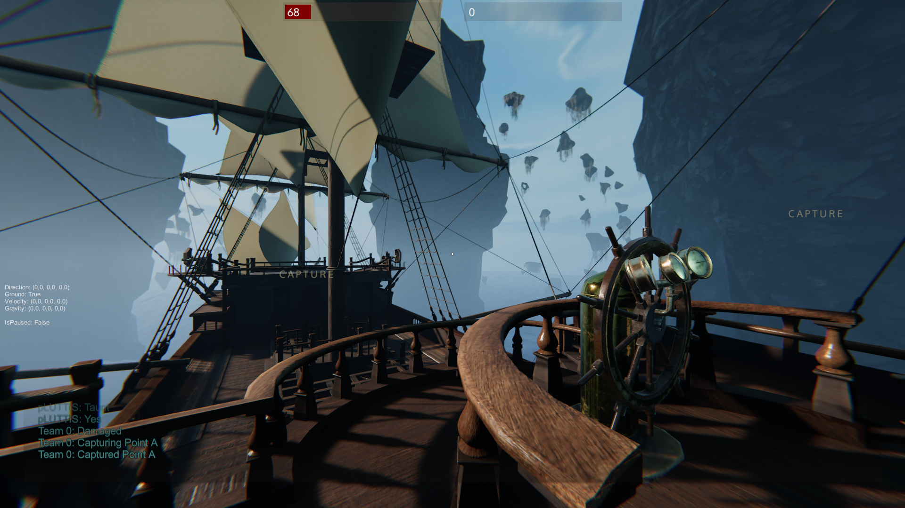
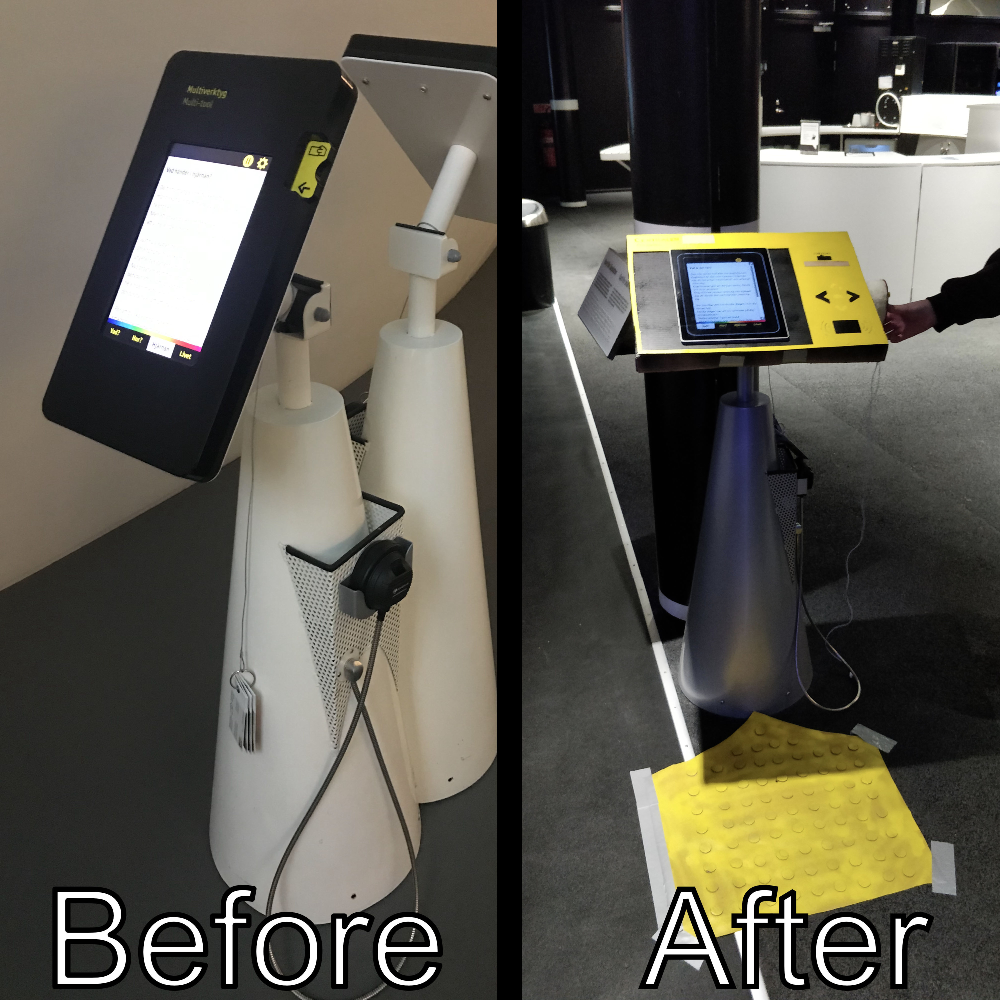
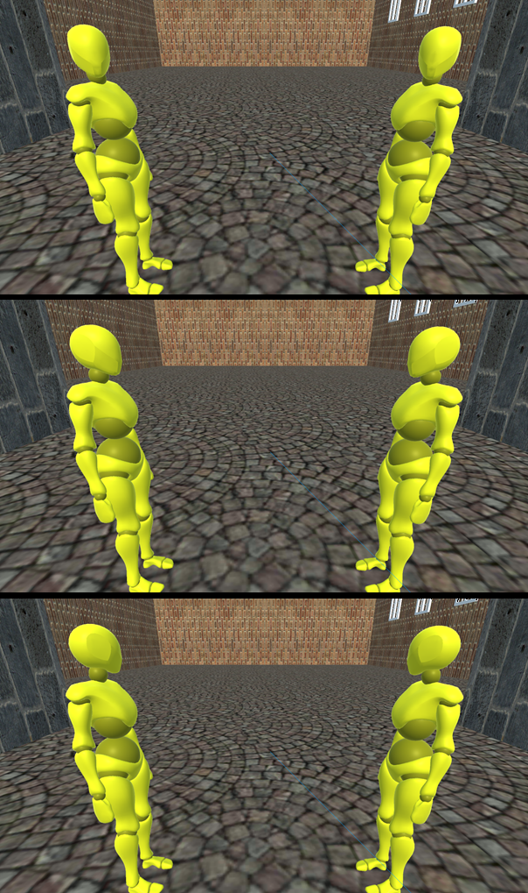

I'm a full-time postgraduate student studying towards a master's degree in 'MSc Interactive Media Technology' at KTH in Stockholm, Sweden.
I'm passionate about gaming and human-computer interaction with game design in particular. Other areas include UX/Interaction-Design,
(Game) User Research and general Game Development.
You can read more about me in my BIO.
Below are some projects I've enjoyed working on. In the navigation bar (or menu button on mobile) you can also find some links to external sites with more of my work.
5 person school project
A mobile rythm game project in my bachelor studies. Working agilely with four others.
The course was about mobile game development and UX-design.
In this project I mainly worked with:
• Design and programming
• Particle Systems
• Optimizing input and performance for mobile

10 person school project
The final big game project in my bachelor studies. Working agilely with nine others each with different roles.
A part of the course was also aimed at making gaming accessible. In this project I mainly worked with:
• Gameplay Programming
• VFX


For increased accessiblity aimed at visitors with visual impairments. The prototype was designed collaboratively by all team-members.

Project work for a master course in Multimodal Interaction and Interfaces. We designed a game controlled by gaze and keyboard.
I was in charge of:
• Project managing
• Designing the experiment
• Writing a large part of report

Perceptual study for a master course in Human Perception for Information Technology. We investigated the effects varying head rotations
of a small group of virtual agents in VR have on the groups perceived openness for participants.
I was in charge of:
• Project managing
• The technical setup
• Designing the experiment
• Writing a large part of report